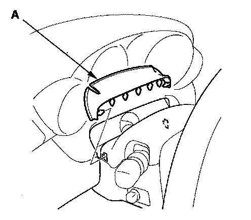
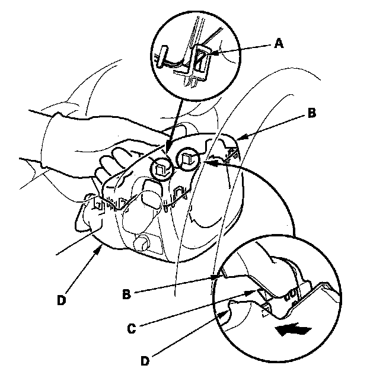
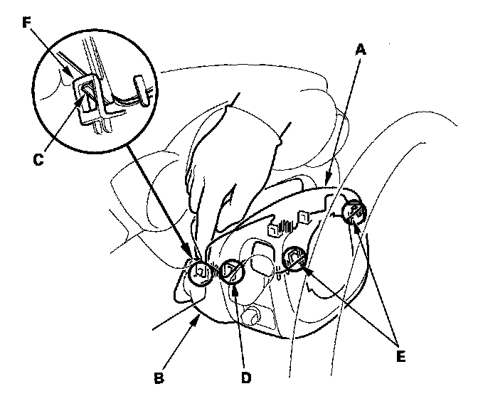
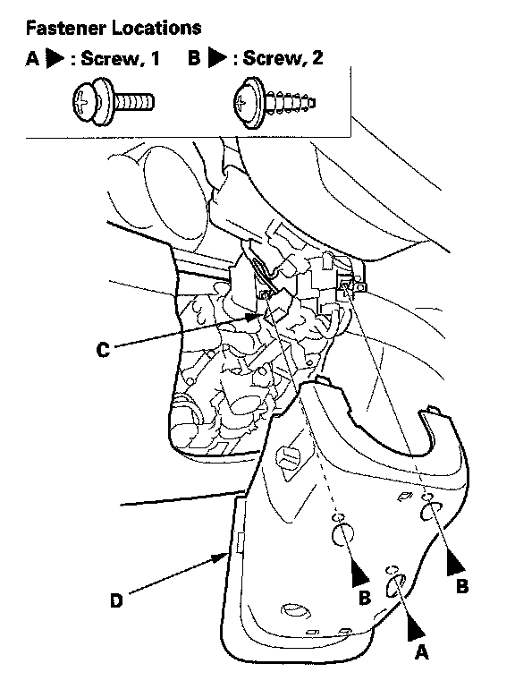

Column Cover
Column Cover Removal/InstallationNOTE:
- Put on gloves to protect your hands.
- Take care not to scratch the column covers.
- Do not pry the cover surface with any tools.
1. Adjust the steering column to full tilt down position and to the full telescopic pull position.

2. Remove the cover (A).

3. Release the tab (A) locating on the right side of the upper column cover (B) with your finger.
4. Release the left tab (C) of the upper column cover while pushing the lower column cover (D) from the right side.

5. With the right side of the upper column cover (A) slightly apart from the lower column cover (B), release the tab (C) located on the left side of the upper column cover with your finger.
6. Remove the cover by lightly pulling it up by releasing the left side tab (D) and the front tabs (E) of the upper column cover.
NOTE: Carefully release the tabs, and note the hooks (F) may break when the upper column cover is pulled up too hard.

7. Remove the three screws (A, B) and disconnect the tilt/telescopic switch connector (C), then remove the lower column cover (D).
8. Install the upper and lower column cover in the reverse order of removal, and note these items:
- Make sure the tilt/telescopic switch connector is plugged in properly.
- Push the hooks into place securely.